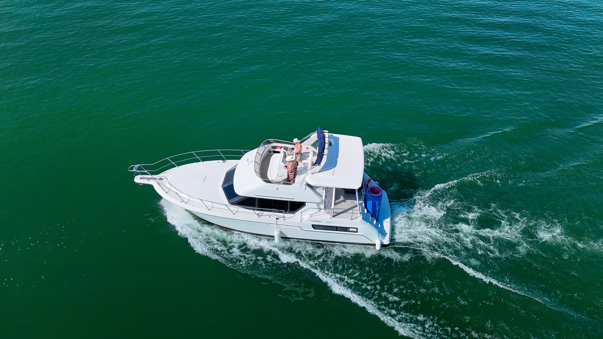

Guided Tours · Lake Travis
Boat Tours in Austin, Texas
Every charter is captain-led. No maps, no guesswork, just someone who knows Lake Travis cold and makes sure you see the best of it.
Book a Tour
Guided Tours · Lake Travis
Every charter is captain-led. No maps, no guesswork, just someone who knows Lake Travis cold and makes sure you see the best of it.
Book a TourWhen you book a boat tour with Texas Forever Charters, you're not renting a vessel and figuring out the rest yourself. Captain DJ or Dane is with you the entire time, navigating, narrating, and making sure your group gets the most out of every hour on the water.
Both captains have spent years on Lake Travis. They know where the best coves are, where the water is clearest, when to anchor and when to cruise. That local knowledge makes a real difference in the quality of your experience.
Tours depart from Volente Beach Waterpark & Resort. From there, the route is built around your group, whether you want a scenic cruise, time to anchor and swim, or a full loop of the best spots on the lake.
Lake Travis has more to offer than most people realize. The main basin is wide and dramatic, but the real highlights are tucked into the coves and inlets along the Hill Country shoreline.
Most tours include time anchored at Devil's Cove, where guests swim, float on the mats, and take in the views. It's been a Lake Travis staple for decades and never gets old.
We offer flexible charter windows ranging from two hours to a full day on the water. For larger groups, the 1996 Carver Aft Cabin motor yacht accommodates up to 20 guests with a full interior below deck, salon, kitchen, bedroom, and 2 restrooms. It's the flagship of Texas Forever Charters for good reason.
For smaller groups and more relaxed outings, the 24ft Bentley Navigator pontoon is an excellent choice, comfortable, steady, and great for laid-back tours and sunset cruises.
Whichever boat you choose, the experience is the same: a real captain, a real tour, and a real day on one of Texas's best lakes.
See All ExperiencesPrivate tours available for any group size. Check availability and book direct, no booking fees, no middleman.
Check AvailabilityEarly access to new dates, last-minute openings, and seasonal deals straight from Lake Travis.
We respect your inbox. Unsubscribe anytime.